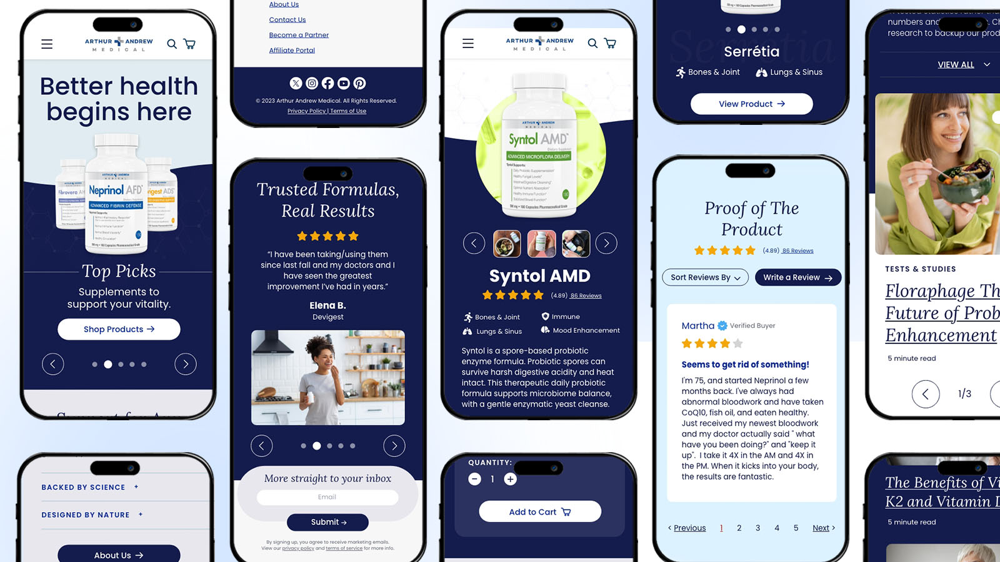
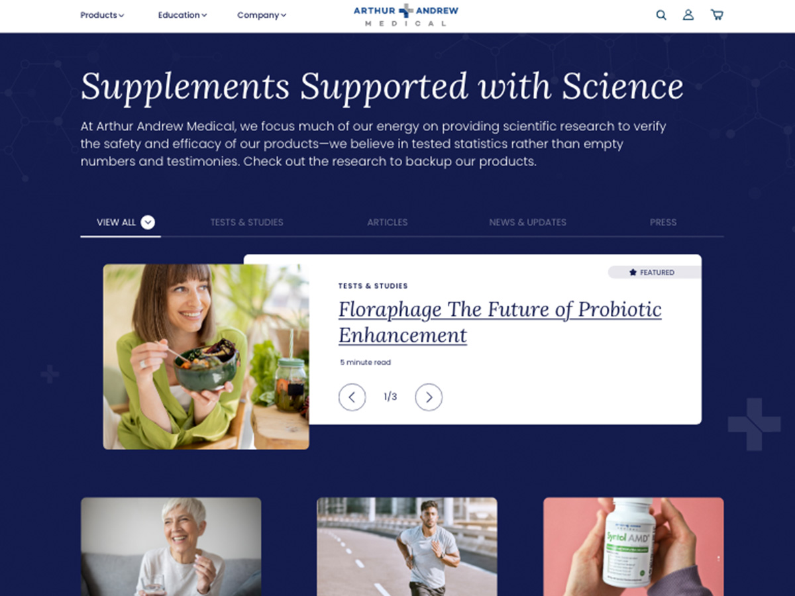
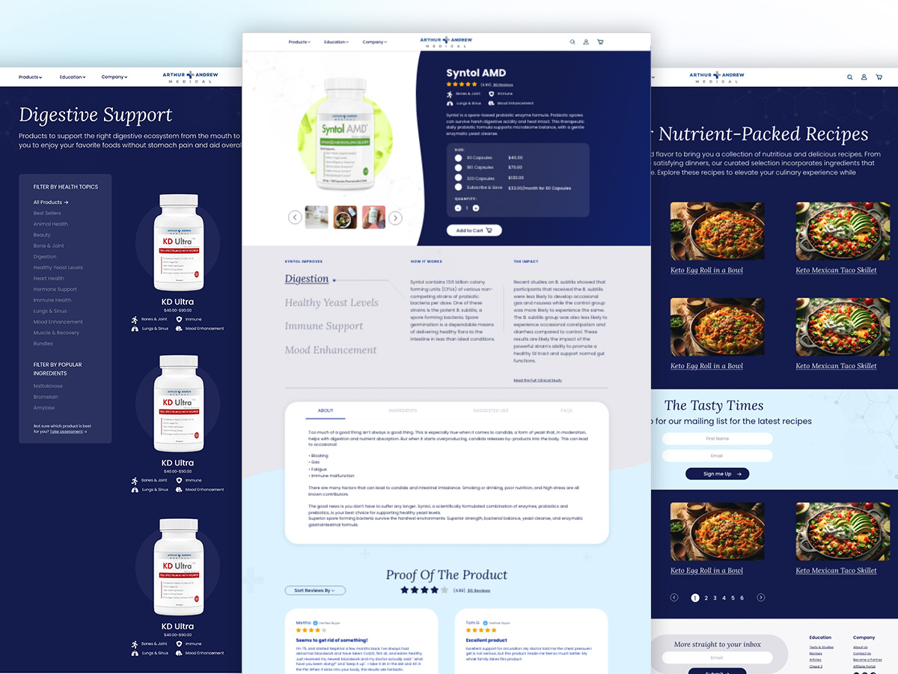
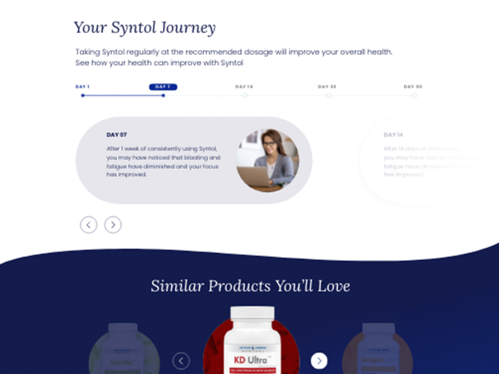
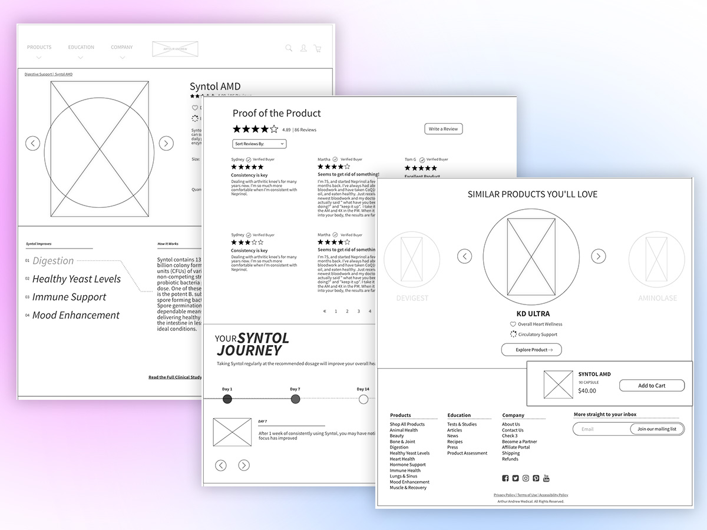
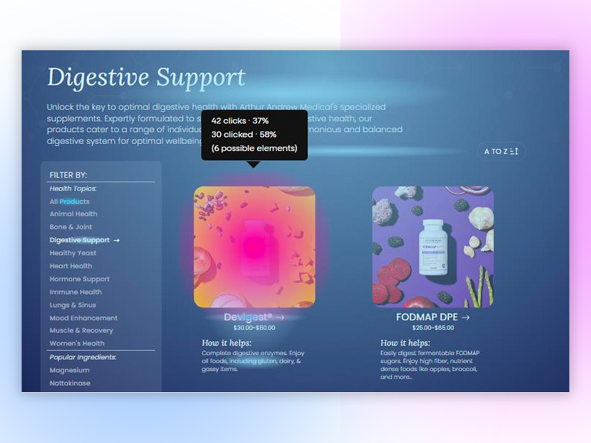

Arthur Andrew Medical
An e-commerce redesign guided by real session data.
Product & UXAzima TIM · Digital Transformation of the Year
> redesign a supplement store so the site feels like the ads
- Client
- Arthur Andrew Medical · Zion & Zion
- Role
- Lead UX Designer
- Built with
- FullStoryFigmaUsability testingPreference testing
The brief
The ads looked modern. The website they pointed to looked years behind.
The move
Six research methods tested one hypothesis, and the first meeting opened with a data-backed homepage.
+58%conversion lift
72%chose the new homepage
2Azima TIM awards
Components





